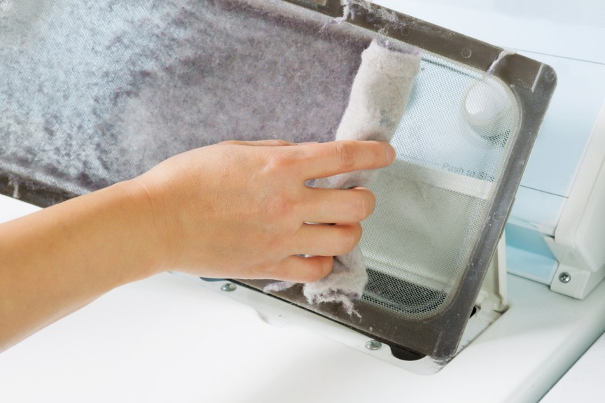

What is Dryer Lint?
Dryer lint is composed mainly of tiny fibers shed from clothes during the drying process. It can be both natural and synthetic, posing a fire hazard.
Transforming flammable waste into valuable materials.
Dryer lint is composed mainly of tiny fibers shed from clothes during the drying process. It can be both natural and synthetic, posing a fire hazard.
Incorporating dryer lint into cement enhances crack resistance, tensile strength, and impact resistance, making concrete more resilient.
Email: zubeefaidal0107@gmail.com | Phone: 09679400080